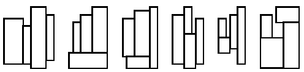

给定 4 个矩形块，找出一个最小的封闭矩形将这 4 个矩形块放入，但不得相互重叠。所谓最小矩形指该矩形面积最小。

所有 4 个矩形块的边都与封闭矩形的边相平行，图 1 示出了铺放 4 个矩形块的 6 种方案。这 6 种方案只是可能的基本铺放方案。因为其它方案能由基本方案通过旋转和镜像反射得到。
可能存在满足条件且有着同样面积的各种不同的封闭矩形，你应该输出所有这些封闭矩形的边长。
共有 4 行。每一行用两个正整数来表示一个给定的矩形块的两个边长。矩形块的每条边的边长范围最小是 1，最大是 50。
总行数为解的总数加 $1$。第一行是一个整数，代表封闭矩形的最小面积（子任务 A）。接下来的每一行都表示一个解，由数 $P$ 和数 $Q$ 来表示，并且 $P≤Q$（子任务 B）。这些行必须根据 $P$ 的大小按升序排列，$P$ 小的行在前，大的在后。且所有行都应是不同的。
1 2 2 3 3 4 4 5
40 4 10 5 8
 Comet OJ
Comet OJ